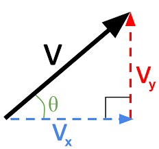

Movimiento Rectilíneo Acelerado y Lanzamiento de Proyectiles
Ejemplo 1
Un vehículo que marcha a una velocidad de 15 m/s aumenta su velocidad a razón de 1 m/s cada segundo.
- Calcular la distancia recorrida en 6 segundos.
- Si disminuye su velocidad a razón de 1 m/s cada segundo, calcular la distancia recorrida en 6 segundos y el tiempo que demora en detenerse.

A)
Modelemos la aceleración:
\[ \vec{a} = 1 \hspace{0.1cm} \hat{ı} \hspace{0.1cm} \left [ \frac{m}{s^2} \right ] \]
Integrando:
\[ \vec{v} = t \hspace{0.1cm} \hat{ı} + \vec{v}_0 \hspace{0.1cm} \left [ \frac{m}{s} \right ] \]
La velocidad inicial es de 15 m/s, por lo que \(\vec{v}_0 = 15 \hspace{0.1cm} \hat{ı} \hspace{0.1cm} \left [ \frac{m}{s} \right ]\)
\[ \vec{v} = t \hspace{0.1cm} \hat{ı} + 15 \hspace{0.1cm} \hat{ı} \hspace{0.1cm} \left [ \frac{m}{s} \right ] \]
Integrando nuevamente:
\[ \vec{r} = \left( \frac{1}{2} t^2 + 15t \right) \hspace{0.1cm} \hat{ı} + \vec{r}_0 \hspace{0.1cm} \left [ m \right ] \]
No hay posición inicial, por lo que \(\vec{r}_0 = 0 \hspace{0.1cm} \hat{ı} \hspace{0.1cm} \left [ m \right ]\)
\[ \vec{r} = \left( \frac{1}{2} t^2 + 15t \right) \hspace{0.1cm} \hat{ı} \hspace{0.1cm} \left [ m \right ] \]
Para calcular la distancia recorrida en 6 segundos, reemplazamos \(t = 6 \hspace{0.1cm} s\):
\[ \vec{r} = \left( \frac{1}{2} (6)^2 + 15(6) \right) \hspace{0.1cm} \hat{ı} = 108 \hspace{0.1cm} \hat{ı} \hspace{0.1cm} \left [ m \right ] \]
B)
Modelemos la aceleración:
\[ \vec{a} = -1 \hspace{0.1cm} \hat{ı} \hspace{0.1cm} \left [ \frac{m}{s^2} \right ] \]
Integrando:
\[ \vec{v} = -t \hspace{0.1cm} \hat{ı} + \vec{v}_0 \hspace{0.1cm} \left [ \frac{m}{s} \right ] \]
La velocidad inicial es de 15 m/s, por lo que \(\vec{v}_0 = 15 \hspace{0.1cm} \hat{ı} \hspace{0.1cm} \left [ \frac{m}{s} \right ]\)
\[ \vec{v} = \left( -t + 15 \right ) \hspace{0.1cm} \hat{ı} \hspace{0.1cm} \left [ \frac{m}{s} \right ] \]
Integrando nuevamente:
\[ \vec{r} = \left( -\frac{1}{2} t^2 + 15t \right) \hspace{0.1cm} \hat{ı} + \vec{r}_0 \hspace{0.1cm} \left [ m \right ] \]
Nuevamente no hay posición inicial, por lo que \(\vec{r}_0 = 0 \hspace{0.1cm} \hat{ı} \hspace{0.1cm} \left [ m \right ]\)
\[ \vec{r} = \left( -\frac{1}{2} t^2 + 15t \right) \hspace{0.1cm} \hat{ı} \hspace{0.1cm} \left [ m \right ] \]
Para calcular la distancia recorrida en 6 segundos, reemplazamos \(t = 6 \hspace{0.1cm} s\):
\[ \vec{r} = \left( -\frac{1}{2} (6)^2 + 15(6) \right) \hspace{0.1cm} \hat{ı} = 72 \hspace{0.1cm} \hat{ı} \hspace{0.1cm} \left [ m \right ] \]
Para calcular el tiempo que demora en detenerse, igualamos la velocidad a cero:
\[ -t + 15 = 0 \Rightarrow t = 15 \hspace{0.1cm} s \]
Por lo que el tiempo que demora en detenerse es de 15 segundos.
Ejercicio 1
A la salida de una ciudad un automóvil está estacionado, al lado pasa un camión con velocidad constante de 72 km/h.Justo cuando el camión pasa al lado del automóvil, este arranca con una aceleración constante de 2.5 m/s² en el mismo sentido del camión. ¿Cuánto tiempo tardará el automóvil en alcanzar al camión y a qué distancia de la ciudad lo hará? Además, ¿cuál será la velocidad del automóvil en ese instante?

Camión
Modelemos la aceleración del camión: \[ \vec{a}_{\text{camión}} = 0 \hspace{0.1cm} \hat{ı} \hspace{0.1cm} \left [ \frac{m}{s^2} \right ] \]
Integrando: \[ \vec{v}_{\text{camión}} = C = \vec{v}_0 \hspace{0.1cm} \left [ \frac{m}{s} \right ] \]
La velocidad inicial del camión es de 72 km/h, por lo que \(\vec{v}_0 = 72 \hspace{0.1cm} \hat{ı} \hspace{0.1cm} \left [ \frac{km}{h} \right ]\) \[ \vec{v}_{\text{camión}} = 72 \hspace{0.1cm} \hat{ı} \hspace{0.1cm} \left [ \frac{km}{h} \right ] \] Pasandolo a metros por segundo: \[ \vec{v}_{\text{camión}} = 72 \hspace{0.1cm} \hat{ı} \hspace{0.1cm} \left [ \frac{km}{h} \right ] \cdot \frac{1000 \hspace{0.1cm} m}{1 \hspace{0.1cm} km} \cdot \frac{1 \hspace{0.1cm} h}{3600 \hspace{0.1cm} s} = 20 \hspace{0.1cm} \hat{ı} \hspace{0.1cm} \left [ \frac{m}{s} \right ] \]
Integrando nuevamente: \[ \vec{r}_{\text{camión}} = 20t \hspace{0.1cm} \hat{ı} + \vec{r}_{0} \hspace{0.1cm} \left [ m \right ] \] No hay posición inicial, por lo que \(\vec{r}_{0} = 0 \hspace{0.1cm} \hat{ı} \hspace{0.1cm} \left [ m \right ]\) \[ \vec{r}_{\text{camión}} = 20t \hspace{0.1cm} \hat{ı} \hspace{0.1cm} \left [ m \right ] \]
Automóvil
Modelemos la aceleración del automóvil: \[ \vec{a}_{\text{auto}} = 2.5 \hspace{0.1cm} \hat{ı} \hspace{0.1cm} \left [ \frac{m}{s^2} \right ] \] Integrando: \[ \vec{v}_{\text{auto}} = 2.5t + \vec{v}_{0} \hspace{0.1cm} \left [ \frac{m}{s} \right ] \] La velocidad inicial del automóvil es de 0 m/s, por lo que \(\vec{v}_{0} = 0 \hspace{0.1cm} \hat{ı} \hspace{0.1cm} \left [ \frac{m}{s} \right ]\) \[ \vec{v}_{\text{auto}} = 2.5t \hspace{0.1cm} \hat{ı} \hspace{0.1cm} \left [ \frac{m}{s} \right ] \]
Integrando nuevamente: \[ \vec{r}_{\text{auto}} = 1.25t^2 + \vec{r}_{0} \hspace{0.1cm} \hat{ı} \hspace{0.1cm} \left [ m \right ] \] No hay posición inicial, por lo que \(\vec{r}_{0} = 0 \hspace{0.1cm} \hat{ı} \hspace{0.1cm} \left [ m \right ]\)
\[ \vec{r}_{\text{auto}} = 1.25t^2 \hspace{0.1cm} \hat{ı} \hspace{0.1cm} \left [ m \right ] \]
Tiempo en alcanzar al camión
Igualamos las posiciones del camión y del automóvil: \[ \vec{r}_{\text{camión}} = \vec{r}_{\text{auto}} \] \[ 20t = 1.25t^2 \] Despejamos \(t\): \[ 1.25t^2 - 20t = 0 \] \[ t(1.25t - 20) = 0 \] \[ t = 0 \hspace{0.1cm} s \hspace{0.1cm} \text{o} \hspace{0.1cm} t = \frac{20}{1.25} = 16 \hspace{0.1cm} s \]
\(t = 0\) es trivial, no lo consideramos como solución. Por lo que el tiempo que tarda en alcanzar al camión es de 16 segundos.
Distancia de la ciudad (Distancia recorrida)
Reemplazamos \(t = 16 \hspace{0.1cm} s\) en la posición del automóvil
\[ \vec{r}_{\text{auto}} = 1.25(16)^2 \hspace{0.1cm} \hat{ı} = 320 \hspace{0.1cm} \hat{ı} \hspace{0.1cm} \left [ m \right ] \]
Velocidad del automóvil
Reemplazamos \(t = 16 \hspace{0.1cm} s\) en la velocidad del automóvil:
\[ \vec{v}_{\text{auto}} = 2.5(16) \hspace{0.1cm} \hat{ı} = 40 \hspace{0.1cm} \hat{ı} \hspace{0.1cm} \left [ \frac{m}{s} \right ] \]
Ejercicio 2
Una patrulla de policía que viaja a 36 km/h es rebasada por una camioneta a exceso de velocidad también con velocidad constante 90 km/h. Exactamente 1 segundo después de ser rebasada, la patrulla comienza a acelerar a 2 m/s² para alcanzar a la camioneta. ¿Cuánto tiempo tardará la patrulla en alcanzarla? Además, ¿cuál será la velocidad de la patrulla en ese instante (en metros por segundo)?

Patrulla de policía
Dado que el ejercicio pregunta por el tiempo del punto de encuentro, no es necesario modelar la posición de la patrulla antes de acelerar.
Modelemos la aceleración de la patrulla: \[ \vec{a}_{\text{patrulla}} = 2 \hspace{0.1cm} \hat{ı} \hspace{0.1cm} \left [ \frac{m}{s^2} \right ] \] Integrando: \[ \vec{v}_{\text{patrulla}} = 2t \hspace{0.1cm} \hat{ı} + \vec{v}_{0} \hspace{0.1cm} \left [ \frac{m}{s} \right ] \] La velocidad inicial de la patrulla es de 36 km/h, por lo que \(\vec{v}_{0} = 36 \hspace{0.1cm} \hat{ı} \hspace{0.1cm} \left [ \frac{km}{h} \right ]\) Pero antes, pasamos la velocidad inicial a m/s:
\[ \vec{v}_{0} = 36 \hspace{0.1cm} \hat{ı} \hspace{0.1cm} \left [ \frac{km}{h} \right ] \cdot \frac{1000 \hspace{0.1cm} m}{1 \hspace{0.1cm} km} \cdot \frac{1 \hspace{0.1cm} h}{3600 \hspace{0.1cm} s} = 10 \hspace{0.1cm} \hat{ı} \hspace{0.1cm} \left [ \frac{m}{s} \right ] \]
\[ \vec{v}_{\text{patrulla}} = ( 2t + 10 ) \hspace{0.1cm} \hat{ı} \hspace{0.1cm} \left [ \frac{m}{s} \right ] \] Integrando nuevamente: \[ \vec{r}_{\text{patrulla}} = ( t^2 + 10t ) \hspace{0.1cm} \hat{ı} + \vec{r}_{0} \hspace{0.1cm} \left [ m \right ] \] No hay posición inicial, por lo que \(\vec{r}_{0} = 0 \hspace{0.1cm} \hat{ı} \hspace{0.1cm} \left [ m \right ]\) \[ \vec{r}_{\text{patrulla}} = t^2 + 10t \hspace{0.1cm} \hat{ı} \hspace{0.1cm} \left [ m \right ] \]
Camioneta
No tiene aceleración: \[ \vec{a}_{\text{camioneta}} = 0 \hspace{0.1cm} \hat{ı} \hspace{0.1cm} \left [ \frac{m}{s^2} \right ] \] Integrando: \[ \vec{v}_{\text{camioneta}} = C = \vec{v}_{0} \hspace{0.1cm} \left [ \frac{m}{s} \right ] \] Recordemos que la velocidad de la camioneta es de 90 km/h, por lo que \(\vec{v}_{0} = 90 \hspace{0.1cm} \hat{ı} \hspace{0.1cm} \left [ \frac{km}{h} \right ]\) Pasamos la velocidad a m/s: \[ \vec{v}_{\text{camioneta}} = 90 \hspace{0.1cm} \hat{ı} \hspace{0.1cm} \left [ \frac{km}{h} \right ] \cdot \frac{1000 \hspace{0.1cm} m}{1 \hspace{0.1cm} km} \cdot \frac{1 \hspace{0.1cm} h}{3600 \hspace{0.1cm} s} = 25 \hspace{0.1cm} \hat{ı} \hspace{0.1cm} \left [ \frac{m}{s} \right ] \]
\[ \vec{v}_{\text{camioneta}} = 25 \hspace{0.1cm} \hat{ı} \hspace{0.1cm} \left [ \frac{m}{s} \right ] \] Integrando nuevamente: \[ \vec{r}_{\text{camioneta}} = 25t \hspace{0.1cm} \hat{ı} + \vec{r}_{0} \hspace{0.1cm} \left [ m \right ] \] No hay posición inicial, por lo que \(\vec{r}_{0} = 0 \hspace{0.1cm} \hat{ı} \hspace{0.1cm} \left [ m \right ]\) \[ \vec{r}_{\text{camioneta}} = 25t \hspace{0.1cm} \hat{ı} \hspace{0.1cm} \left [ m \right ] \]
Tiempo en alcanzar a la camioneta
Igualamos las posiciones de la patrulla y de la camioneta: \[ \vec{r}_{\text{patrulla}} = \vec{r}_{\text{camioneta}} \] \[ t^2 + 10t = 25t \] Despejamos \(t\): \[ t^2 - 15t = 0 \] \[ t(t - 15) = 0 \] \[ t = 0 \hspace{0.1cm} s \hspace{0.1cm} \text{o} \hspace{0.1cm} t = 15 \hspace{0.1cm} s \]
\(t = 0\) es trivial, no lo consideramos como solución. Por lo que el tiempo que tarda en alcanzar a la camioneta es de 15 segundos.
Velocidad de la patrulla
Reemplazamos \(t = 15 \hspace{0.1cm} s\) en la velocidad de la patrulla:
\[ \vec{v}_{\text{patrulla}} = ( 2(15) + 10 ) \hspace{0.1cm} \hat{ı} = 40 \hspace{0.1cm} \hat{ı} \hspace{0.1cm} \left [ \frac{m}{s} \right ] \]
Lanzamiento de proyectiles

Ejemplo
Se lanza un proyectil desde una altura de 12 m con una velocidad inicial de 27 m/s en un ángulo de 0° respecto a la horizontal. Calcular la distancia horizontal recorrida por el proyectil y el tiempo que tarda en llegar al suelo.

Para modelar este tipo de ejercicios, no es muy diferente a los ejercicios anteriores. La diferencia es que ahora tenemos dos componentes de movimiento, el movimiento horizontal y el movimiento vertical.
Modelemos la aceleración considerando ambos ejes. No hay aceleración horizontal y la aceleración vertical es la gravedad: \[ \vec{a} = -9.81 \hspace{0.1cm} \hat{ȷ} \hspace{0.1cm} \left [ \frac{m}{s^2} \right ] \]
Integrando: \[ \vec{v} = ( -9.81t ) \hspace{0.1cm} \hat{ȷ} + \vec{v}_0 \hspace{0.1cm} \left [ \frac{m}{s} \right ] \]
La velocidad inicial es de 27 m/s horizontalmente, por lo que \(\vec{v}_0 = 27 \hspace{0.1cm} \hat{ı} + 0 \hspace{0.1cm} \hat{ȷ} \hspace{0.1cm} \left [ \frac{m}{s} \right ]\)
Entonces la velocidad quedaría: \[ \vec{v} = ( 27 \hspace{0.1cm} \hat{ı} - 9.81t \hspace{0.1cm} \hat{ȷ} ) \hspace{0.1cm} \left [ \frac{m}{s} \right ] \]
Integrando una vez más: \[ \vec{r} = ( 27t \hspace{0.1cm} \hat{ı} - \frac{9.81}{2} t^2 \hspace{0.1cm} \hat{ȷ} ) + \vec{r}_0 \hspace{0.1cm} \left [ m \right ] \] Recordemos que hay una altura inicial de 12 m, por lo que \(\vec{r}_0 = 0 \hspace{0.1cm} \hat{ı} + 12 \hspace{0.1cm} \hat{ȷ} \hspace{0.1cm} \left [ m \right ]\) \[ \vec{r} = ( 27t \hspace{0.1cm} \hat{ı})+( - \frac{9.81}{2} t^2 + 12 ) \hspace{0.1cm} \hat{ȷ} \hspace{0.1cm} \left [ m \right ] \]
Distancia horizontal recorrida
Para calcular la distancia horizontal recorrida, necesitamos el tiempo que tarda en llegar al suelo. Para eso, igualamos la componente vertical de la posición a cero:
\[ - \frac{9.81}{2} t^2 + 12 = 0 \]
Despejamos \(t\): \[ - \frac{9.81}{2} t^2 = -12 \] \[ t^2 = \frac{12}{\frac{9.81}{2}} = \frac{24}{9.81} \] \[ t = \sqrt{\frac{24}{9.81}} \approx 1.56 \hspace{0.1cm} s \]
Ahora que tenemos el tiempo, podemos calcular la distancia horizontal recorrida. Reemplazamos \(t = 1.56 \hspace{0.1cm} s\) en la componente horizontal de la posición: \[ \vec{r} = ( 27(1.56) \hspace{0.1cm} \hat{ı})\hspace{0.1cm} \left [ m \right ] \] \[ \vec{r} = 42.12 \hspace{0.1cm} \hat{ı} \hspace{0.1cm} \left [ m \right ] \]
Ejercicio 3
Una pelota de béisbol sale golpeada por un bate con una velocidad de 30 m/s en un ángulo de 30° respecto a la horizontal. ¿Cuáles son las componentes horizontal y vertical de la velocidad después de 3 s? ¿ Que distancia horizontal ha recorrido la pelota cuando toca el suelo? ¿Cuál es la altura máxima alcanzada por la pelota?

Como siempre, modelemos la aceleración: \[ \vec{a} = -9.81 \hspace{0.1cm} \hat{ȷ} \hspace{0.1cm} \left [ \frac{m}{s^2} \right ] \] Integrando: \[ \vec{v} = ( -9.81t ) \hspace{0.1cm} \hat{ȷ} + \vec{v}_0 \hspace{0.1cm} \left [ \frac{m}{s} \right ] \]
En este caso, la velocidad inicial es de 30 m/s en un ángulo de 30° respecto a la horizontal. Por lo que podemos descomponer la velocidad inicial en sus componentes horizontal y vertical: \[ \vec{v}_0 = 30 \cos(30°) \hspace{0.1cm} \hat{ı} + 30 \sin(30°) \hspace{0.1cm} \hat{ȷ} \hspace{0.1cm} \left [ \frac{m}{s} \right ] \]
\[ \vec{v}_0 = 25.98 \hspace{0.1cm} \hat{ı} + 15 \hspace{0.1cm} \hat{ȷ} \hspace{0.1cm} \left [ \frac{m}{s} \right ] \] Ahora, reemplazamos \(\vec{v}_0\) en la ecuación de la velocidad: \[ \vec{v} = -9.81t \hspace{0.1cm} \hat{ȷ} + ( 25.98 \hspace{0.1cm} \hat{ı} + 15 \hspace{0.1cm} \hat{ȷ} ) \hspace{0.1cm} \left [ \frac{m}{s} \right ] \] Reorganizemos la ecuación en base a los vectores unitarios: \[ \vec{v} = 25.98 \hspace{0.1cm} \hat{ı} + ( 15 - 9.81t ) \hspace{0.1cm} \hat{ȷ} \hspace{0.1cm} \left [ \frac{m}{s} \right ] \]
Componente horizontal de la velocidad
Evaluamos \(t = 3 \hspace{0.1cm} s\) solo en la componente horizontal: \[ \vec{v}_{\text{horizontal}} = 25.98 \hspace{0.1cm} \hat{ı} \hspace{0.1cm} \left [ \frac{m}{s} \right ] \] Dado que no hay un parámetro de tiempo en la componente horizontal, la velocidad no cambia. Por lo que la componente horizontal de la velocidad es de 25.98 m/s.
Componente vertical de la velocidad
Evaluamos \(t = 3 \hspace{0.1cm} s\) en la componente vertical: \[ \vec{v}_{\text{vertical}} = ( 15 - 9.81(3) ) \hspace{0.1cm} \hat{ȷ} \hspace{0.1cm} \left [ \frac{m}{s} \right ] \] \[ \vec{v}_{\text{vertical}} = ( 15 - 29.43 ) \hspace{0.1cm} \hat{ȷ} \hspace{0.1cm} \left [ \frac{m}{s} \right ] \] \[ \vec{v}_{\text{vertical}} = -14.43 \hspace{0.1cm} \hat{ȷ} \hspace{0.1cm} \left [ \frac{m}{s} \right ] \]
Distancia horizontal recorrida
Para calcular la distancia horizontal recorrida, necesitamos la función posición. Integrando nuevamente: \[ \vec{r} = ( 25.98t \hspace{0.1cm} \hat{ı} + ( 15t - \frac{9.81}{2} t^2 ) \hspace{0.1cm} \hat{ȷ} ) + \vec{r}_0 \hspace{0.1cm} \left [ m \right ] \] No hay posición inicial, por lo que \(\vec{r}_0 = 0 \hspace{0.1cm} \hat{ı} + 0 \hspace{0.1cm} \hat{ȷ} \hspace{0.1cm} \left [ m \right ]\) \[ \vec{r} = ( 25.98t \hspace{0.1cm} \hat{ı} + ( 15t - 4.905t^2 ) \hspace{0.1cm} \hat{ȷ} ) \hspace{0.1cm} \left [ m \right ] \] Para calcular la distancia horizontal recorrida, igualamos la componente vertical de la posición a cero: \[ ( 15t - 4.905t^2 ) = 0 \] Despejamos \(t\): \[ 15t - 4.905t^2 = 0 \]
\[ t( 15 - 4.905t ) = 0 \] Quitando la solución trivial \(t = 0\): \[ 15 - 4.905t = 0 \] \[ 4.905t = 15 \] \[ t = \frac{15}{4.905} \approx 3.06 \hspace{0.1cm} s \] Este es el tiempo que tarda en llegar al suelo. Ahora, reemplazamos \(t = 3.06 \hspace{0.1cm} s\) en la componente horizontal de la posición: \[ \vec{r} = ( 25.98(3.06) \hspace{0.1cm} \hat{ı} ) \hspace{0.1cm} \left [ m \right ] \] \[ \vec{r} = 79.5 \hspace{0.1cm} \hat{ı} \hspace{0.1cm} \left [ m \right ] \]
Ejercicio 4
Un cañon de artillería es disparado con una velocidad de 125 m/s en un ángulo de 38° respecto a la horizontal. Si explota 10 s después de ser disparado, ¿a qué distancia horizontal se encuentra el proyectil en el instante de la explosión? ¿Cuál es la altura máxima alcanzada por el proyectil al explosionar? ¿Cuál es el módulo de la velocidad del proyectil en el instante de la explosión?¿Cuál es el ángulo de la velocidad del proyectil en el instante de la explosión respecto a la horizontal?

Modelemos la aceleración: \[ \vec{a} = -9.81 \hspace{0.1cm} \hat{ȷ} \hspace{0.1cm} \left [ \frac{m}{s^2} \right ] \] Integrando: \[ \vec{v} = ( -9.81t ) \hspace{0.1cm} \hat{ȷ} + \vec{v}_0 \hspace{0.1cm} \left [ \frac{m}{s} \right ] \] La velocidad inicial es de 125 m/s en un ángulo de 38° respecto a la horizontal. Por lo que podemos descomponer la velocidad inicial en sus componentes horizontal y vertical: \[ \vec{v}_0 = 125 \cos(38°) \hspace{0.1cm} \hat{ı} + 125 \sin(38°) \hspace{0.1cm} \hat{ȷ} \hspace{0.1cm} \left [ \frac{m}{s} \right ] \] \[ \vec{v}_0 = 98.5 \hspace{0.1cm} \hat{ı} + 76.96 \hspace{0.1cm} \hat{ȷ} \hspace{0.1cm} \left [ \frac{m}{s} \right ] \]
Ahora, reemplazamos \(\vec{v}_0\) en la ecuación de la velocidad: \[ \vec{v} = -9.81t \hspace{0.1cm} \hat{ȷ} + ( 98.5 \hspace{0.1cm} \hat{ı} + 76.96 \hspace{0.1cm} \hat{ȷ} ) \hspace{0.1cm} \left [ \frac{m}{s} \right ] \] Reorganizemos la ecuación en base a los vectores unitarios: \[ \vec{v} = 98.5 \hspace{0.1cm} \hat{ı} + ( 76.96 - 9.81t ) \hspace{0.1cm} \hat{ȷ} \hspace{0.1cm} \left [ \frac{m}{s} \right ] \] Necesitamos calcular la distancia horizontal recorrida y la altura máxima alcanzada por el proyectil, por lo que necesitamos la función posición. Integrando nuevamente: \[ \vec{r} = ( 98.5t \hspace{0.1cm} \hat{ı} + ( 76.96t - \frac{9.81}{2} t^2 ) \hspace{0.1cm} \hat{ȷ} ) + \vec{r}_0 \hspace{0.1cm} \left [ m \right ] \] \[ \vec{r} = ( 98.5t \hspace{0.1cm} \hat{ı} + ( 76.96t - 4.9t^2 ) \hspace{0.1cm} \hat{ȷ} ) + \vec{r}_0 \hspace{0.1cm} \left [ m \right ] \]
No hay posición inicial, por lo que \(\vec{r}_0 = 0 \hspace{0.1cm} \hat{ı} + 0 \hspace{0.1cm} \hat{ȷ} \hspace{0.1cm} \left [ m \right ]\) \[ \vec{r} = ( 98.5t \hspace{0.1cm} \hat{ı} + ( 76.96t - 4.9t^2 ) \hspace{0.1cm} \hat{ȷ} ) \hspace{0.1cm} \left [ m \right ] \]
Distancia horizontal recorrida
Para calcular la distancia horizontal recorrida, reemplazamos \(t = 10 \hspace{0.1cm} s\) en la componente horizontal de la posición: \[ \vec{r} = ( 98.5(10) \hspace{0.1cm} \hat{ı} ) \hspace{0.1cm} \left [ m \right ] \] \[ \vec{r} = 985 \hspace{0.1cm} \hat{ı} \hspace{0.1cm} \left [ m \right ] \]
Altura máxima alcanzada al explosionar
Para calcular la altura máxima alcanzada, reemplazamos \(t = 10 \hspace{0.1cm} s\) en la componente vertical de la posición: \[ \vec{r} = ( 76.96(10) - 4.9(10)^2 ) \hspace{0.1cm} \hat{ȷ} \hspace{0.1cm} \left [ m \right ] \] \[ \vec{r} = 279.6 \hspace{0.1cm} \hat{ȷ} \hspace{0.1cm} \left [ m \right ] \]
Módulo de la velocidad
Para calcular el módulo de la velocidad, reemplazamos \(t = 10 \hspace{0.1cm} s\) en la ecuación de la velocidad: \[ \vec{v} = 98.5 \hspace{0.1cm} \hat{ı} + ( 76.96 - 9.81(10) ) \hspace{0.1cm} \hat{ȷ} \hspace{0.1cm} \left [ \frac{m}{s} \right ] \] \[ \vec{v} = 98.5 \hspace{0.1cm} \hat{ı} + ( 76.96 - 98.1 ) \hspace{0.1cm} \hat{ȷ} \hspace{0.1cm} \left [ \frac{m}{s} \right ] \] \[ \vec{v} = 98.5 \hspace{0.1cm} \hat{ı} + ( -21.14 ) \hspace{0.1cm} \hat{ȷ} \hspace{0.1cm} \left [ \frac{m}{s} \right ] \]
La fórmula para calcular el módulo de un vector es: \[ |\vec{v}| = \sqrt{v_x^2 + v_y^2} \] \[ |\vec{v}| = \sqrt{( 98.5 )^2 + ( -21.14 )^2} \hspace{0.1cm} \left [ \frac{m}{s} \right ] \] \[ |\vec{v}| = \sqrt{9702.25 + 446.89} \hspace{0.1cm} \left [ \frac{m}{s} \right ] \] \[ |\vec{v}| = \sqrt{10149.14} \hspace{0.1cm} \left [ \frac{m}{s} \right ] \] \[ |\vec{v}| \approx 100.74 \hspace{0.1cm} \left [ \frac{m}{s} \right ] \]
Ángulo de la velocidad
Para calcular el ángulo de la velocidad, podemos usar una función trigonométrica armando un triángulo rectángulo con las componentes de la velocidad:

Podemos usar cualquier función trigonométrica, pero en este caso usaremos la tangente: \[ \tan(\theta) = \frac{v_y}{v_x} \]
Despejamos \(\theta\): \[ \theta = \tan^{-1} \left( \frac{v_y}{v_x} \right) \]
Reemplazamos \(v_y\) y \(v_x\): \[ \theta = \tan^{-1} \left( \frac{-21.14}{98.5} \right) \] \[ \theta = \tan^{-1} \left( -0.215 \right) \] \[ \theta \approx -12.11° \]